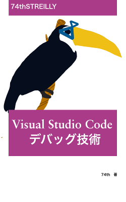

技術書典3お品書き

概要
- 2017.10.22 技術書典3 https://techbookfest.org/event/tbf03
- ブース: お18
- サークル名: 74th
- 書名: Visual Studio Codeデバッグ技術
- 頒布価格:
- 本+PDF 1,000円
- PDF 800円
- PixivPay対応
- サイズ: A5/114ページ
Visual Studo Codeでひたすらデバックしまくる本。 第1部では、VSCodeのデバッグ機能の全解説や、デバッガとのやり取りを行うVSCodeが提供しているプロトコルを解説を通して、VSCodeのデバッグへの理解を深める。
第2部では、様々な言語のデバッグのやり方と、各言語でのデバッグのスペックを眺めてニヤニヤできる。いざその言語でデバッグしたいときの助けになれると期待。
ソースコード
第2部のソースコードは以下で公開しています。
https://github.com/74th/vscode-debug-specs
目次
- 第 I 部 デバッグ機能解説
- 第 1 章 デバッグ機能とは
- 1.1 Visual Studio Code について
- 1.2 デバッグ機能とは
- 1.3 デバッガを実現するためには
- 1.4 GNU デバッガ
- 1.5 VSCode のデバッグ機能のアーキテクチャ
- 第 2 章 Debugger UI
- 2.1 画面構成
- 2.2 Debug メニュー
- 2.3 ブレークポイント
- 2.4 ステップ実行
- 2.5 データインスペクション
- 2.6 コールスタック
- 2.7 デバッグコンソール
- 2.8 コードレンズ
- 2.9 launch.json
- 2.10 マルチターゲットデバッグ
- 2.11 デバッグ実行における標準キーボードショートカット
- 第 3 章 デバッグフレームワーク
- 3.1 package.json の実装
- 3.2 DebugSession の実装
- 3.3 初期化要求の実装
- 3.4 ブレークポイント要求の実装
- 3.5 停止イベントの通知
- 3.6 スタックトレース要求の実装
- 3.7 変数要求の実装
- 3.8 ステップ実行の実装
- 3.9 デバッグコンソールの実装
- 3.10 デバッグプロトコルを総覧して
- 第 1 章 デバッグ機能とは
- 第 II 部 言語・環境別デバッグ機能性能
- 第 4 章 各言語のデバッグ性能の評価項目
- 4.1 デバッグに成功しなかったもの
- 第 5 章 Go 言語
- 5.1 基本情報
- 5.2 性能評価
- 5.3 インストール
- 5.4 単体テストのデバッグ
- 5.5 実行ファイルのデバッグ
- 5.6 実行中プロセス、リモートプロセスへのアタッチ
- 第 6 章 ServerSide(NodeJS) JavaScript and TypeScript
- 6.1 基本情報
- 6.2 性能評価
- 6.3 インストール
- 6.4 単体テスト (Mocha) のデバッグ
- 6.5 単体テスト (Jasmine) のデバッグ
- 6.6 実行ファイルのデバッグ
- 6.7 実行中のプログラムへのアタッチ
- 6.8 リモートマシンのプロセスへのアタッチ
- 6.9 TypeScript のデバッグ
- 第 7 章 FrontEnd(Chrome) JavaScript and TypeScript
- 7.1 基本情報
- 7.2 性能評価
- 7.3 Chrome ブラウザを起動するデバッグ
- 7.4 起動済みの Chrome ブラウザへのアタッチ
- 7.5 browserify を適用したスクリプトのデバッグ
- 7.6 webpack を適用したスクリプトのデバッグ
- 7.7 TypeScript と webpack の組み合わせのデバッグ
- 第 8 章 Electron JavaScript and TypeScript 63
- 8.1 基本情報
- 8.2 性能評価
- 8.3 インストール
- 8.4 レンダラープロセスへのアタッチ
- 8.5 メインプロセスへのアタッチ
- 第 9 章 Cordova JavaScript
- 第 10 章 Python
- 10.1 基本情報
- 10.2 性能評価
- 10.3 インストールとインタプリタの選択
- 10.4 単体テスト (unittest) のデバッグ
- 10.5 実行ファイルのデバッグ
- 10.6 リモートプロセスへのアタッチ
- 第 11 章 C# (.NET Core)
- 11.1 基本情報
- 11.2 性能評価
- 11.3 インストール
- 11.4 単体テスト (XUnit) のデバッグ
- 11.5 実行プログラムのデバッグ
- 11.6 ASP.NET Core のデバッグ
- 11.7 リモートプロセスへのアタッチ
- 第 12 章 C/C++
- 12.1 基本情報
- 12.2 性能評価
- 12.3 インストール
- 12.4 デバッグ関連の gcc のオプション
- 12.5 単体テスト (CUnit) のデバッグ
- 12.6 実行ファイルのデバッグ
- 第 13 章 Java
- 13.1 基本情報
- 13.2 性能評価
- 13.3 インストール
- 13.4 単体テスト (junit) のデバッグ
- 13.5 実行プログラムのデバッグ
- 13.6 実行済みプロセスへのアタッチ
- 第 14 章 PHP
- 14.1 基本情報
- 14.2 性能評価
- 14.3 インストール
- 14.4 リモートプロセスへのアタッチ
- 第 15 章 Bash
- 15.1 基本情報
- 15.2 性能評価
- 15.3 インストール
- 15.4 実行ファイルのデバッグ
- 第 4 章 各言語のデバッグ性能の評価項目